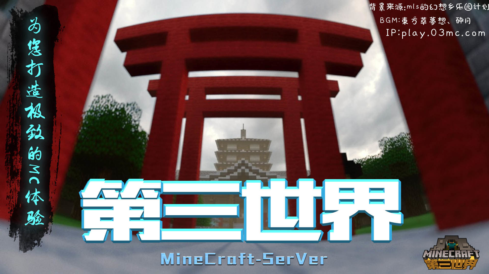

如何加入游戏？
为什么要选择第三世界服务器？
专业
第三世界团队迄今已有七年的开服经验
丰富的经验为您打造极致的游戏体验
养老
服务器运行费用低廉，腐竹为工作党
保证永久不换周目不关服
特色
粘液科技，异域花园，神秘科技等玩法
本着易上手的态度增加了游戏可玩性
您即将常驻的服务器找到啦！
原版玩法
建筑 — 服务器中有各式各样由玩家搭建的建筑、像素画与地图画，还有超大地图画施工中
机械 — 欢迎建造各式各样的红石机械，为了防止恶意破坏者，本服务器禁用了活塞刷物品/TNT
其他设施 — 各式各样的生电建筑如末地经验塔、瓜机、甘蔗机、村民交易所一应俱全，皆由玩家们一起建设，向所有玩家开放
拓展插件玩法
粘液科技 — 扩展了游戏的玩法，从插件入手，实现了mod的乐趣
异域花园 — 各种农作物来啦~树上还会结果
神秘科技 — 为粘液科技添加了更多机器与工具，完成任务获得神剑吧！
为您打造极致的游戏体验！
关于我们
第三世界团队迄今已有七年开服历史。
第三世界为基友服，第三世界团队也会和大家一起游戏（不会作弊）
第三世界团队向大家保证没有不可抗力的原因则永不关服或停服！
腐竹的话
大家好，我是第三世界服务器的腐竹。
第三世界是一个友好的服务器，如果您在游戏里与别人发生矛盾，还请以友好的方式处理。
我衷心的希望您能在游戏里获得快乐与收获友谊，这正是第三世界服务器的意义所在。
感谢您能在第三世界服务器常驻，您的支持是将是我前进的动力！